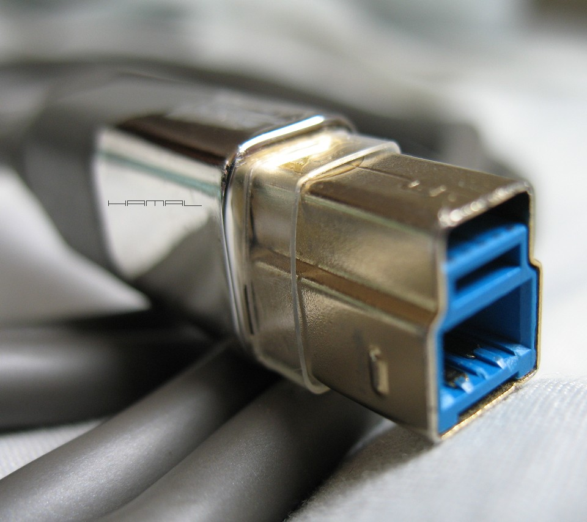

|
Kupujemy dobrą kamerkę astrofotograficzną, kupujemy dobry kabel USB, wkładamy wtyczkę w gniazdo kamerki, a ona giba się w gnieździe na wszystkie strony. Bywa tak, że w czasie sesji fotograficznych ów luz potrafi być przyczyną utraty dobrego styku i zawieszenia się kamerki. Ja z powyższym problemem poradziłem sobie w niżej zaprezentowany sposób, a polega on, na zamontowaniu na wtyczce dedykowanego pierścienia sklejonego z pleksi z opakowania od bielizny. Szerokość paska musi zostać tak dobrana do danej wtyczki, aby gdy wtyczka osiągnie pełną głębokość osadzenia w gnieździe, nasz pierścień opierał się równomiernie o zewnętrzne części gniazda USB, powodując sztywne osadzenie kabla. Pierścień nie wchodzi do środka, lecz swoim brzegiem opiera się o brzegi gniazda, powodując brak swobody wtyczki. Stosuję od lat z dobrym skutkiem, więc chyba mogę uznać, że metoda się sprawdziła i jest godna polecenia :)  |